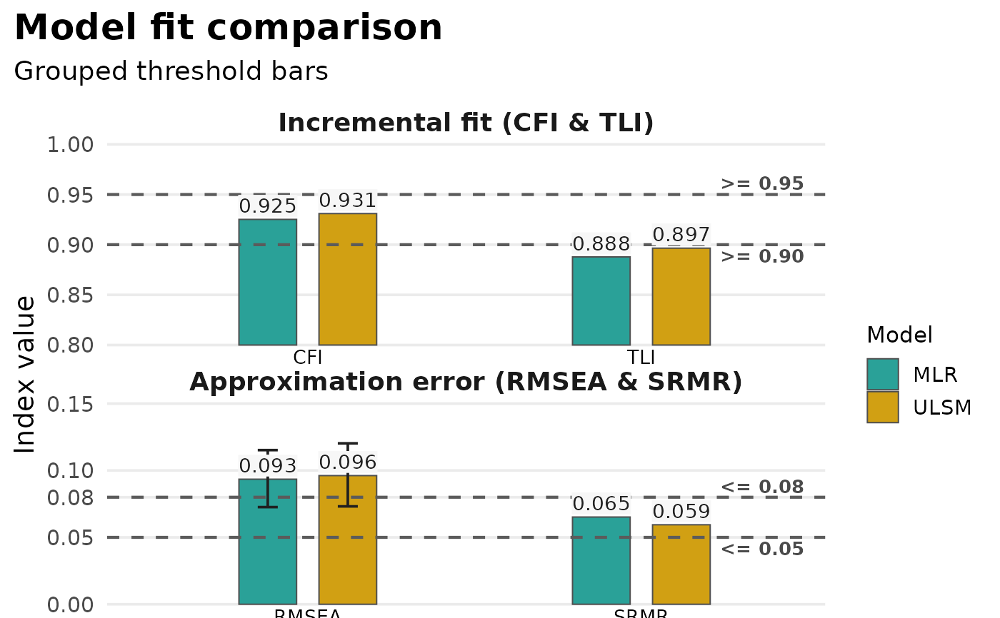

plot_model_fit() is the public plotting entrypoint for fit-index
objects created by model_fit() and compare_model_fit().
In v0.5.0, it supports exactly two classes:
model_fitfor one fitted model, including multi-row test summariescompare_model_fitfor two or more fitted models, including multi-row test summaries
The default plot style is chosen automatically after applying test_mode.
For model_fit, the default is a single-fit bullet chart when one row
remains, and a threshold-aware dot plot otherwise. For compare_model_fit,
the default is always the threshold-aware dot plot.
Arguments
- x
A
model_fitorcompare_model_fitobject.- type
Character string indicating the plot style. Supported values are
"default","bullet","dots","bars", and"heatmap".- metrics
Optional character vector selecting which fit indices to plot. Supported metrics are
"CFI","TLI","RMSEA", and"SRMR". Defaults toNULL, which uses those metrics in canonical order when they are present in the object.- test_mode
Character string controlling which test rows are plotted when the input contains multiple rows per model. Supported values are
"all","non_standard","standard_only", and"primary". Defaults to"all".- verbose
Logical. If
TRUE, non-fatal informational messages are shown when requested metrics are unavailable and dropped.- ...
Reserved for future extensions. Currently ignored.
Examples
if (requireNamespace("lavaan", quietly = TRUE)) {
library(lavaan)
library(psymetrics)
hs_model <- 'visual =~ x1 + x2 + x3
textual =~ x4 + x5 + x6
speed =~ x7 + x8 + x9'
fit_mlr <- cfa(hs_model, data = HolzingerSwineford1939, estimator = "MLR")
fit_ulsm <- cfa(hs_model, data = HolzingerSwineford1939, estimator = "ULSM")
single_fit <- model_fit(fit_mlr)
plot_model_fit(single_fit)
compared_fits <- compare_model_fit(MLR = fit_mlr, ULSM = fit_ulsm)
plot_model_fit(compared_fits)
plot_model_fit(compared_fits, type = "bars")
}
